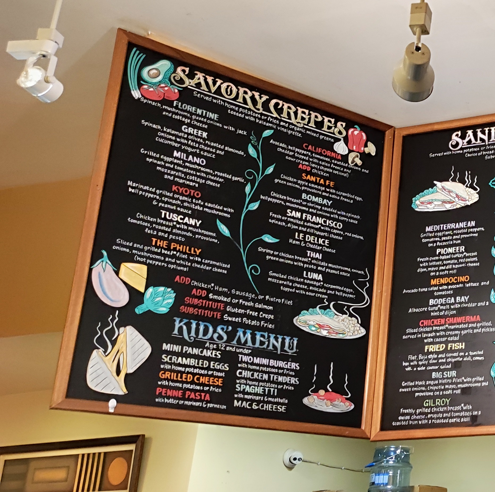
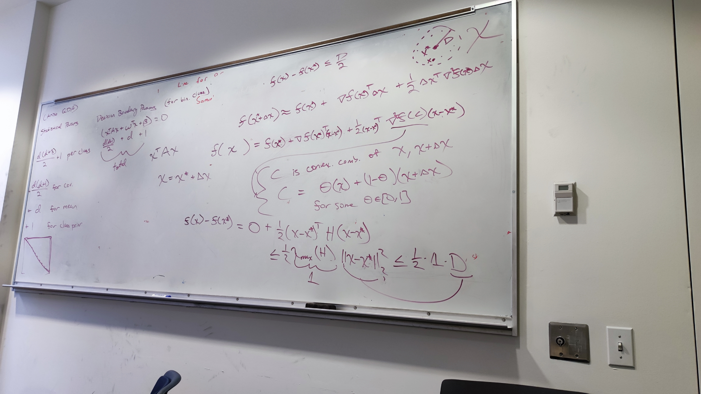

Part A.1
_______________________________________________

Part1 Image
Part A.2
Next, we select correspondence points for our images to _______________________________________________
Recovered Homography Matrix
[ 6.41627275e-01, 1.78404625e-01, 1.07327821e+02],
[-3.80550278e-01, 1.06400977e+00, 1.54645094e+02],
[-1.89449115e-04, 1.11919643e-04, 1.00000000e+00]

Correspondence Points for Menu Board

Part2 Image
Part A.3
After recovering the homorgraphy matrix, we can implement warping functions _______________________________________________

Original Board Image

Rectified Board - Bilinear Interpolation

Original Math Image

Rectified Math - Nearest Neighbors
Part A.4
_______________________________________________

Part4 Image